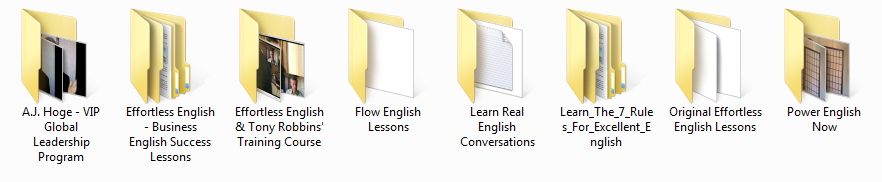
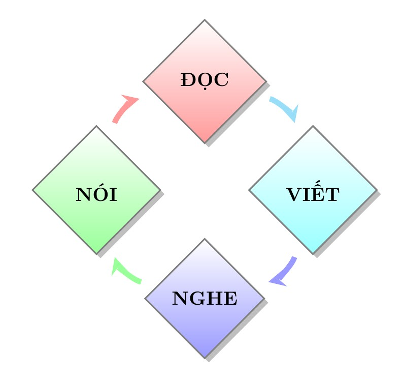
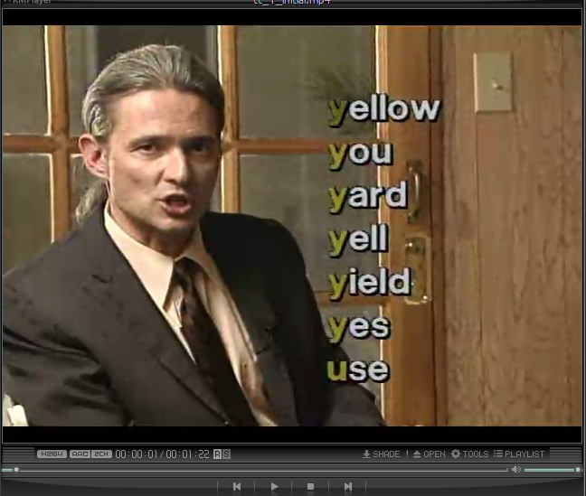
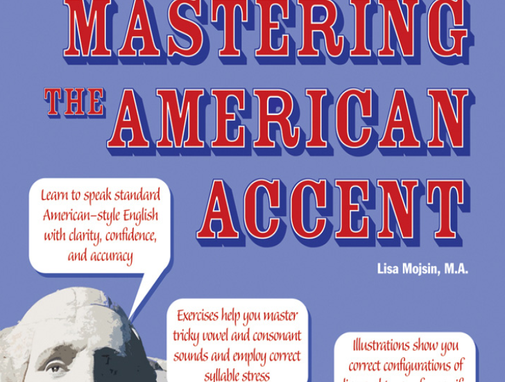
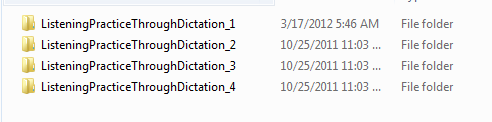
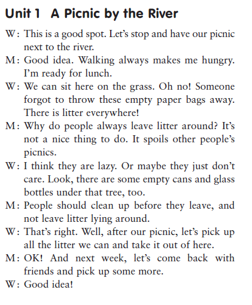

Effortless English
Đây là phương pháp nổi tiếng nhất hiện nay, với phương châm “thuận theo tự nhiên” được phát triển bởi AJ Hoge – hiện đang sống tại Mỹ. Doremon giới thiệu cho anh em bởi vì:
-
Phương pháp này được xây dựng dựa trên rất nhiều công trình khoa học về Ngôn Ngữ học và các mảng kiến thức khác.
-
AJ Hoge không chỉ nói mà ông ta còn thiết kế 1 hệ thống để các bạn học.

Các bạn có thể tự tìm tài liệu, còn Doremon chỉ có thể giới thiệu hình bìa, tên sách vì thời gian không cho phép.
Trong tất cả các phần trên thì phần quan trọng nhất là: Power English Now. Trong phần này AJ Hoge cung cấp cho chúng ta các bài đọc tuyệt vời về cách học tiếng Anh. Các bạn hãy tự đọc sau đó hãy tự biết cách học vì Doremon không đủ thời gian để miêu tả. Nếu các bạn không hiểu được nội dung của phương pháp này mà học bừa như trên mạng thì thật sự là vô cùng phí phạm, vì tất cả các bài học AJ Hoge đã thiết kế, đều ẩn chứa hàm ý trong đó, và các bạn chỉ có thể hiểu nếu các bạn đọc toàn bộ 30 bài Main Text.
Nhiều bạn không đọc kỹ mà lụi vào học bừa, lúc này Effortless English cũng chỉ như bao phương pháp khác, cũng nghe, cũng nói…. Nhưng điều này rất nguy hiểm, giống như bạn dùng thuốc mà không đọc hướng dẫn thì có thể chết như chơi, học mà không hiểu nội dung của phương pháp thì cũng như “sấm bên tai”, nghe xong rồi vứt.
Một số kỹ xảo bắt buộc phải học.
Doremon sẽ cung cấp cho các bạn một số công cụ để học kèm với Effortless English. Đương nhiên AJ Hoge không thể cung cấp toàn bộ giáo trình cho chúng ta, mà ông ta chỉ xây dựng hệ thống, và chúng ta phải tự biết cách tìm kiếm các phần còn lại.
Luyện Nói
Hãy quên đi việc học tiếng Anh chỉ để dịch tài liệu, mà không cần nói với nghe. Bốn kỹ năng: nghe, đọc (đọc sách bằng mắt), nói, viết có mối quan hệ tương hỗ với nhau. Theo Effortless English, việc viết hay đồng nghĩa với việc giỏi ngữ pháp bắt nguồn từ việc đọc nhiều. Đây chính là câu trả lời cho các bạn về vấn đề: không cần học ngữ pháp nhưng vẫn giỏi ngữ pháp.
Việc giỏi ngữ pháp không phải là kết quả của việc mổ xẻ một câu nào đó để phân tích và học cấu trúc câu, mà nó là kết quả của việc đọc nhiều – đây là kết luận của nhà Ngôn Ngữ học hàng đầu thế giới Stephen D Krashen. Ông ta viết (tạm dịch qua tiếng Việt): “khi bạn đọc một ngôn ngữ nào đó thì bạn không còn cách nào khác ngoài việc phải phát triển khả năng đọc – có nghĩa là bạn phải làm quen với các dạng câu, các dấu chấm phẩy, …” đương nhiên khi bạn đã quen rồi thì bạn sẽ lấy câu đó để dùng lại cho việc viết của mình, cho nên tiếp tục “chúng ta ít khi nào phát hiện được lỗi ngữ pháp từ những người đọc nhiều”.
Vấn đề này sẽ được nói rõ hơn ở phần luyện đọc, khi việc đọc phát triển -> dẫn tới việc viết phát triển -> dẫn tới việc nghe phát triển -> dẫn tới việc nói phát triển -> và cắn đuôi lại là dẫn tới việc đọc phát triển. Trong 4 mắt xích này chỉ cần 1 mắt xích bị phá vỡ thì bạn không thể nào trở thành 1 Master of English.

Chú ý: Tuyệt đối nghiêm cấm luyện nói bằng phần mềm – vì âm bị méo – không chính xác.
Phần kế tiếp giới thiệu các giáo trình trong mục này.
American Spoken English (video)

– Miêu tả: chương trình này cực kì hay, nó có hình ảnh minh hoạ (phim), và cực kì căn bản. Cái cần học trong chương trình này: đọc các từ căn bản và đọc các từ nối – quan trọng, vì người Mỹ-Anh ít khi đọc từng từ riêng lẻ mà họ đọc nó dính lại, VD: Why is he… (đọc dính is và he thành quai í she).
– Hạn chế: chỉ phát âm 1 vài âm cơ bản.
Pronunciation Workshop (Video)
– Miêu tả: dùng để khắc phục các âm còn thiếu trong chương trình , nên không cần học hết, chú ý các âm khó là: th, vd: math, teeth. Hãy cố gắng uốn lưỡi giống như hình ảnh trong clip để phát âm đúng âm th – rất khó đấy nhé.
Mastering the American Accent

– Miêu tả: không có clip, nhưng bù lại lượng từ rất là nhiều, và các bạn chỉ được học cái này khi đã xong cái và , 2 giáo trình này sẽ cung cấp cho bạn hình ảnh về cách uốn lưỡi, cách đọc âm gió…
Cái là cái kết thúc trong phần luyện nói, sau khi học xong cái này bạn sẽ biết được các qui tắc phát âm cơ bản, đọc nối từ, một từ có nhiều cách đọc, vd: I’ll: đọc ai qiêu hay ai o hay o.
Doremon có khoảng 8 chương trình phát âm, nhưng post lên nữa là thừa, chỉ cần 3 cái trên là đủ.
Luyện Nghe
Các bạn đặc biệt chú ý, nếu các bạn muốn theo lời khuyên của Doremon thì chỉ nên học Effortless English sau 6 tháng khổ luyện, lí do sẽ trình bày sau.
Việc luyện nghe như đã nói ở phần đầu, nếu các bạn chịu đọc kỹ. Nghe – nghe – và nghe – đây là kỹ năng đầu tiên cần được phát triển, thiếu nó – mọi thứ đều vứt.
Thế tôi nên nghe cái gì? vì không phải cái nào cũng nên nghe. Hiện Doremon có khoảng 20GB tài liệu luyện nghe, nhưng sẽ không post lên đây. Dù các bạn có luyện nghe như thế nào, thì hãy tuân thủ kết quả đã được kiểm nghiệm như đã nói: “Bạn chỉ có thể nhớ được 1 từ khi bạn nghe và nhìn thấy (hay viết) nó 30 lần trở lên trong 1 ngữ cảnh hoàn toàn hiểu được”.
Do vậy các bạn có thể lựa chọn bất cứ giáo trình nào miễn đáp ứng: có file pdf + audio + đoạn văn. Có nghĩa là luyện nghe bằng cách nghe người ta đọc các đoạn văn và vừa nghe vừa nhìn vào file pdf (đồng thời các bạn cũng đang phát triển khả năng đọc như đã nói ở trên). Các giáo trình như trên rất hiếm, vì Doremon đã rất khó khăn để tìm ra nó, đa phần là đọc bài text hay các bài văn quá dài – không phù hợp với người nhập môn.
Các giáo trình tiếp theo.
Listening Practice Through Dictation

Gồm 4 cấp độ, mỗi cấp độ gồm 30 bài, mỗi bài có độ dài như ảnh.

Như vậy nó thoả mãn: vừa đọc pdf + vừa nghe audio + đoạn văn ngắn + bài văn dễ hiểu không dùng slang hay idiom.
Giáo trình này nên học như sau: nên nghe mỗi một bài vài lần và sau đó chuyển qua bài khác. Và mục tiêu cuối cùng là học thuộc (cái này liên quan đến phương pháp của Lí Dương).
Doremon sẽ nhắc lại chìa khoá để thành công: repetition and distinction. Đây là điều mà bất cứ một chuyên gia nào cũng phải thừa nhận, và bất cứ một người nào cũng phải ngán ngẩm. Bạn không đủ khả năng kiên trì để repetition and distinction thì nên bỏ cuộc để khỏi thất vọng. Distinction như đã nói chỉ đến khi repetition đủ nhiều, do vậy nó là trạng thái cao hơn của repetition.
VD: Hãy xem 2 câu sau “I can not wait” và “I can wait”. Nếu là người Anh thì can: đọc là cen, còn cannot: đọc là can. Còn người Mỹ thì can và cannot đọc như nhau, vì người Mỹ thì âm a đọc giống âm e[^1]. Vậy làm sao để ta phân biệt? Câu trả lời: distinction – sự khác biệt.
[^1]: Cần bổ sung IPA
Còn rất nhiều từ mà hầu như chúng đọc hoàn toàn như nhau, cho nên ta không thể nào phân biệt chúng bằng âm mà phải phân biệt chúng bằng nghĩa. Để làm được điều này thì các bạn phải đạt đến trình độ nào đó bằng cách repetition thật nhiều.
Một vị khách lạ đến thăm thành phố chúng ta, ngày đầu tiên ông ta sẽ thấy mọi thứ đều như nhau: con đường, nhà cửa…. Nhưng nếu ông ta sống lâu thì ông ta sẽ dần phân biệt được đâu là nhà ông A, nhà bà B, nhà con C và nhà thằng D…
AJ Hope có hỏi bí quyết của 1 học trò – người tiến bộ nhanh nhất trong lớp, và người này trả lời như sau: vì muốn để đạt đến trình độ Master mà người này đã nghe cùng 1 bài nhưng lặp lại tới 500 lần. Có thể các bạn sẽ không tin – như Doremon khi ngày nào còn tập tò. Nhưng sau khi đã hiểu về chìa khoá của repetition thì: có những bài trong giáo trình trên Doremon nghe hơn 1000 lần – vâng có thể các bạn không tin. Nhưng Doremon cũng như người bình thường, mức nhẫn nại cũng có giới hạn, cho nên cứ ngồi đó mà đếm 1, 2,… 1000 chắc điên. Vậy bí quyết là ở chỗ nào?
Mỗi 1 ngày Doremon đặt mục tiêu nghe 1 bài trong giáo trình đó 5 lần, 1 bài đó ngắn khoảng 01:30s. Sau đó chuyển qua nghe bài khác và cứ thế theo năm theo tháng cho đến khi nhớ toàn bộ từ vựng cũng như ý nghĩa của bài thì ngừng.
– Cho nên: hãy nghe cho tới khi phân biệt được từng từ trong đoạn văn, ban đầu không cần quan tâm đến cái nghĩa, chỉ đặt mục tiêu là nghe và phân biệt các từ, kết hợp với việc luyện nói như đã trình bày, sau khi nghe đủ nhiều và luyện nói hết 3 giáo trình ở trên, thì vứt chúng đi để tiến lên trình độ cao.
Đọc lại toàn bộ bài văn mà các bạn đã luyện nghe nhiều lần. Vừa đọc + kết hợp nút pause để đọc làm sao cho giống như người ta đã đọc cho mình nghe suốt thời gian qua. Hãy nhớ, đọc to thành tiếng (không phải đọc thầm nhé), thậm chí là gào lên cũng được. Các bạn đọc càng to thì tiếng Anh sẽ ngấm vào cơ thể bạn càng nhiều.
Cứ như thế khi đọc được khoảng 15 bài, thì chuyển lên nghe các bài chưa nghe, các bài đã nghe nhiều lần thì chuyển qua đọc to không nghe nữa, sau khi đọc đủ nhiều, thì lúc này bài văn đó gần như đã “ngấm” vào trong thân thể các bạn.
Và tới giai đoạn repetition quan trọng nhất: học thuộc và hiểu nghĩa. Đây là công việc đơn giản vì các bạn đã nghe và đọc nó nhiều lần thì việc học thuộc rất dễ, còn về nghĩa từ nào không biết thì cứ tra từ điển để hiểu. Sau đó đọc to lại lần nữa nhưng ở mức cao hơn, đó là các bạn biết ý nghĩa của cái câu, đoạn văn mà mình đọc.
Cứ như thế cho đến hết 120 bài của 4 cấp độ thì: vốn từ vựng đã nhiều và hầu như khó có thể quên được + có thể hiểu được những câu mà mình đã gặp trong 120 bài mà không cần phải dịch: vì các bạn đã nghe và đọc và viết câu đó quá nhiều lần
VD: câu “I love you” – Một câu không cần dịch cũng hiểu vì các bạn đã repetition quá nhiều.
Đặt mục tiêu 6 tháng hết cái này sau đó các bạn mới đủ lượng từ vựng để hiểu phần nào nội dung của Effectless English – sau khi hiểu được nó thì lúc này các bạn dùng sao để đi đến đích là việc còn lại của các bạn.
Các giáo trình luyện nghe tiếp theo
Xem phim – thật sự là một điều phí phạm nếu bạn không luyện tiếng Anh bằng cách xem phim, vì:
-
Khi xem phim bạn sẽ có đủ các yếu tố: người nói + cử chỉ + cảm xúc… cho nên bạn sẽ phần nào nhạy bén hơn trong việc hiểu câu tiếng Anh, ví dụ nhân vật nói: “this is my book” và ông ta chỉ vào quyển sách trên tay thì ta cũng đoán được nghĩ của cái câu.
-
Khi xem phim các bạn không có đủ thời gian để dịch, để phân tích ngữ pháp… vì khi làm điều này các bạn sẽ không bắt kịp nhịp phim, cho nên nó làm cho bộ óc tăng khả năng phản xạ, có nghĩa là tăng khả năng hiểu mà không cần dịch.
Không nên xem các bộ phim vốn chỉ dành cho dân “truyền thống” như extr\@, vì các bộ phim này mục đích là nói cho chúng ta nghe, nên họ sẽ nói thật chậm và ít dùng slang (từ lóng) hay idiom (thành ngữ), nói tóm lại đó là “ngôn ngữ chết”. Hãy coi các bộ phim mà họ nói cho người của họ nghe – Anh, Mỹ…, nói tóm lại đây là “ngôn ngữ sống”.
Nên xem các thể loại: kinh dị, máu me, ám ảnh, hài, tình yêu… vì như đã nói ở phần đầu, cũng từ các công trình khoa học mà ra: các cảm giác rùng rợn, ghê tởm, hài hước, cảm động sẽ in sâu vào trong bộ não chúng ta. Có những tập phim Doremon coi xong mà nhớ luôn cái từ tiếng Anh đó, như red mouth – vì từ này đi kèm với 1 cái miệng của 1 con quái vật đầy máu.
– Chú ý: khi xem phim không bao giờ được dịch và phải coi kèm với sub(title) (phụ đề), không hiểu thì kệ nó đừng có pause để dịch, cứ để tiếng Anh vào tai một cách tự nhiên, và theo dõi sub trên màn hình. Tự động bộ não của chúng ta sẽ thích nghi và sau thời gian dài nó sẽ hiểu – cái này AJ Hope có nói – đọc Effectless English sẽ thấy.
Các bộ phim nên xem:
-
Friends
Không có ngôn từ nào để diễn tả sự tuyệt vời của 10 season hài Friends – đây là một bộ phim để chúng ta học tiếng Anh thực sự vì: nói rất nhiều, hài tuyệt vời, diễn xuất cực hay, xem hoài không chán.
Đánh giá: 10
Bộ phim này cần xem đi xem lại nhiều lần, và Doremon xem mỗi tập ít nhất 6 lần.
– Lưu ý: gồm 10 season, mỗi season gồm khoảng 24 tập, mỗi tập khoảng 25 phút.
Khi nào đạt đến trình độ coi không cần sub và hiểu được lí do tại sao họ cười thì xem như bạn đã đạt đến 1 trình độ khá cao. Muốn làm điều này thì: phải tranh thủ luyện đọc, luyện nói, luyện viết để vốn từ vựng tăng dần. Phim chỉ có nhiệm vụ như sau: cung cấp hình ảnh để diễn tả cái từ, cái câu và bắt bộ não phải phản xạ thật nhanh. Cho nên đừng tưởng coi phim là học từ vựng.
Học từ vựng là ở giai đoạn trước: nghe + đọc lại + viết lại + đọc lại tiếp. Như vậy sẽ chẳng ích gì nếu bạn chỉ coi phim, trái lại nếu bạn học đi kèm với các kỹ năng kia thì có thể trong bài văn nào đó bạn không thể hiểu được vài câu, thì khi coi phim bạn gặp lại câu đó và thấy họ hành động, do vậy bạn sẽ hiểu.
-
Hannah Montana
Đánh giá: 8
Gồm 4 season - coi hài và có mấy bé xinh lắm.
-
How I Met Your Mother
Đánh giá: 5
Gồm 6 season, mức độ hài dở, hơi nghiêng về tình cảm nhưng tuyệt vời là sub trùng hoàn toàn - mấy season trên có cái sub không trùng.
-
The Suite Life of Zack and Cody
Đánh giá: 7
Gồm 3 season, chỉ có sub vài tập, nhưng được cái có cô bé đáng iu lắm.
-
Thời sự Nhà Trắng - Whitehouse
http://www.youtube.com/user/whitehouse
Dành cho trình độ cấp cao.
Còn nhiều nữa nhưng thôi, tốn thời gian quá. Đây chỉ là giới thiệu và gợi ý một số trong những tài nguyên các bạn có thể sử dụng. Các bạn có thể sử dụng những tài nguyên của riêng mình nếu thấy phù hợp các tiêu chí như đã nêu ở phần đầu.
Luyện Đọc
Đây là giai đoạn sau cùng, nhưng lại quan trọng nhất vì:
-
Nó có tác dụng cung cấp từ vựng.
-
Có tác dụng cung cấp ngữ pháp
-
Đọc để tiếp thu tri thức của nhân loại bằng tiếng Anh.
Hãy đảm bảo rằng bạn đã học hết hoàn toàn lượng từ vựng của Power English Now – Effectless English, và 120 bài nói ở phần luyện nghe. Vì khi tới giai đoạn luyện đọc thì lúc này các bạn đã gần như tới đích: các bạn đã nghe nhiều (xem phim + nghe 120 bài + nghe AJ Hope…), đọc to rõ ràng không biết bao nhiêu bài và viết cũng không ít.
Chỉ khi nào làm được điều này thì các bạn mới đủ khả năng để đọc một cuốn sách bằng tiếng Anh mà không cần dịch, có thể đoán được nghĩa của từ mà không cần tra từ điển. Vì đọc ở đây, mục tiêu là để “thấm” tiếng Anh, có nghĩa là thích thú về câu chuyện hài, ghê sợ không ngủ được vì đọc Edgar Allan Poe – tác giả truyện kinh dị rất nổi tiếng, hay khóc sướt mướt về một tình yêu ngang trái nào đó…, chứ không phải đọc để rồi các bạn còn phải tra từng từ – đọc như vầy thì rất nản và không thu được gì.
Đương nhiên giai đoạn đầu thì các bạn chưa thể đọc mấy ông “khủng” như Stephen King, Alan Watts, mà các bạn phải đọc câu chuyện thiếu nhi, sách dành cho các bé mẫu giáo hay lớp 1 – 5. Các truyện này có hình ảnh, ít trang, ít từ vựng, và giàu tính nhân văn, cho nên khi đọc sách này với lượng từ vựng hiện có thì các bạn sẽ không lo gì việc tra từ vựng mà chỉ có việc đọc để thích. Và cứ thế ta tăng dần cấp độ, nên qua mỗi cuốn sách các bạn sẽ học được vài ba từ vựng – lúc này các bạn sẽ học từ vựng rất nhanh vì các bạn đã có vốn sẵn, hơn nữa trong câu chuyện thì nhiều từ lặp đi lặp lặp lại rất rất nhiều lần.
VD: đọc mấy cuốn liên quan đến biển thì mấy từ như sea, wave, water… lại lại nhiều lắm.
– EJ Hope nói “chỉ cần bạn đọc 1 ngày 1 cuốn, 1 cuốn khoảng gần 100 trang thì sau 1 năm, bạn sẽ đọc được những cuốn sách mà tôi đang đọc.”
Vài cuốn:
Đọc bằng cách xem truyện tranh: đây là 1 cách đọc tuyệt vời.
Vài lời nhắn nhủ
Trước khi kết thúc, có vài lời nhắn nhủ:
-
Theo các kết quả khoa học trên mặt bằng chung: Trong 2 năm đầu tiên sinh viên – học sinh sẽ không có đủ khả năng để dùng tiếng Anh như tiếng mẹ đẻ. Có nghĩa là bạn nên đặt ra mục tiêu rõ ràng và đừng nản lòng vì tại sao tôi học hoài vẫn không tiến bộ, đừng tin vào mấy cái “miệng bô bô” của những trung tâm, hay gì đó, sau 6 tháng hay 9 tháng bạn sẽ nói tiếng Anh như “gió”.
Ngay cả AJ Hope – các bạn đừng hiểu lầm, ông ta có quảng cáo là chỉ cần học theo phương pháp của ông ta thì sau 6 tháng bạn sẽ nói được tiếng Anh một cách tự nhiên. Đương nhiên đây là một hình thức quảng cáo để cạnh tranh, nhưng AJ Hope cũng có nói trong một clip rằng: 6 tháng là không thể nào biến bạn thành một chuyên gia anh văn, nhưng 6 tháng sẽ biến bạn thành một người biết cách học để trở thành chuyên gia anh văn.
-
Đừng tin vào những kẻ “bô bô”, vì trình độ của họ tới đâu thì khi bạn chinh phục được tiếng Anh bạn sẽ hiểu, bản thân của Doremon cũng từng đi xem thử các thông dịch viên làm ăn thế nào. Thật đáng thất vọng, họ hầu như diễn đạt một cách quá “nông” ý mà người Anh muốn nói, đâm ra phiên dịch sai nhiều chỗ, chỗ nào bí thì nói đại vài câu í ớ gì đó. Còn bản thân ông nước ngoài có biết tiếng Việt đâu mà biết dịch đúng hay sai.
Cho nên đừng tự tin rằng mình yếu anh văn, còn người ta giỏi, nhiều người cũng dốt như ta nhưng họ lại “khéo” che đậy.
-
Chúng ta học là để thành Master cho nên đừng nôn nóng, vì chỉ khi đạt đến trình độ Master bạn mới dùng nó để học các tri thức khác, mới vươn ra thế giới được – lúc này tiếng Anh mới thật sự hữu ích. Hãy ráng phấn đấu và ráng nghiên cứu kỹ phương pháp Effortless English và chú ý bài tại mục [sec:kaizen-way]: (trang ).
Bản thân Doremon khổ luyện 1 ngày học tiếng Anh không dưới 10 tiếng và sau 7 tháng thì có thể đọc sách và truyện thiếu nhi bằng tiếng Anh vô tư. Nếu các bạn không có đủ thời gian như Doremon thì cũng ráng 1 ngày dành ra 6 tiếng để: tập nói, tập nghe (giai đoạn 3 tháng đầu), sau đó tập viết và cuối cùng là đọc. Và hãy nhớ là không bỏ ngày nào, lí do vì sao? Câu trả lời nằm trong bài 9 Kaize Text của Effortless English phần Power English Now. Nếu mệt hay nản thì xem phim bằng tiếng Anh, vừa giải trí vừa học.